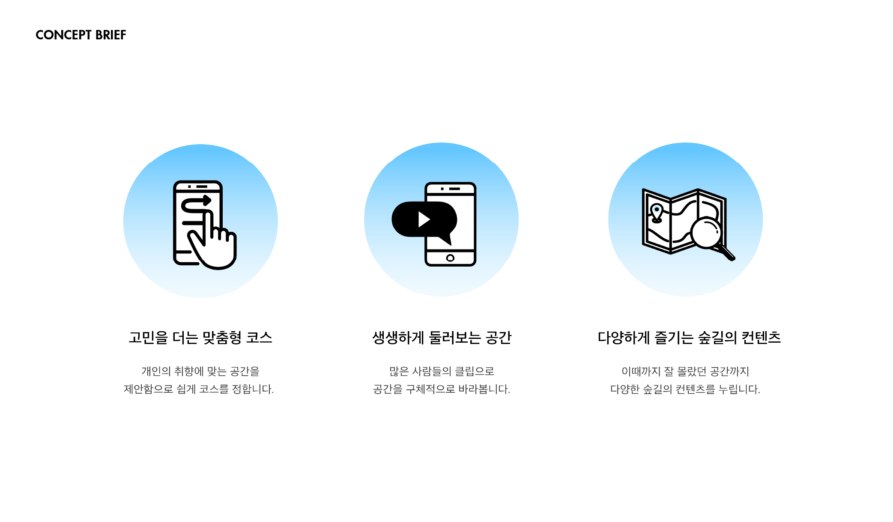
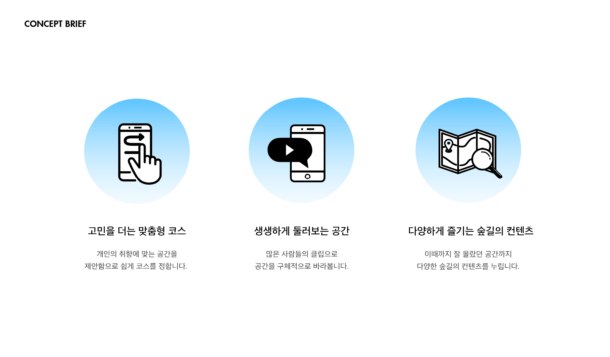
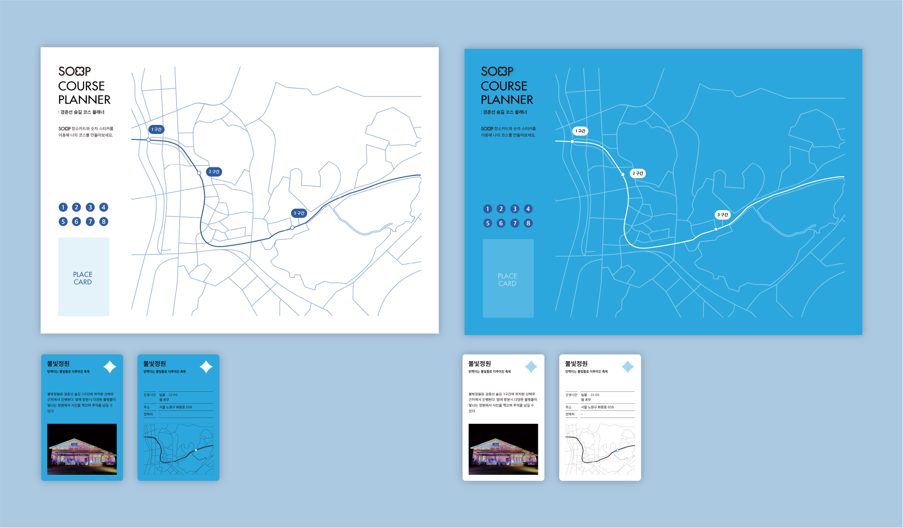
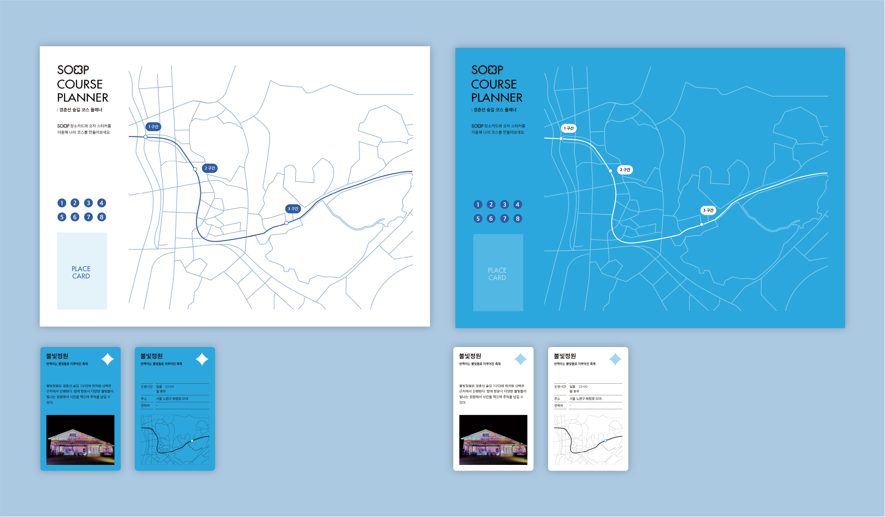
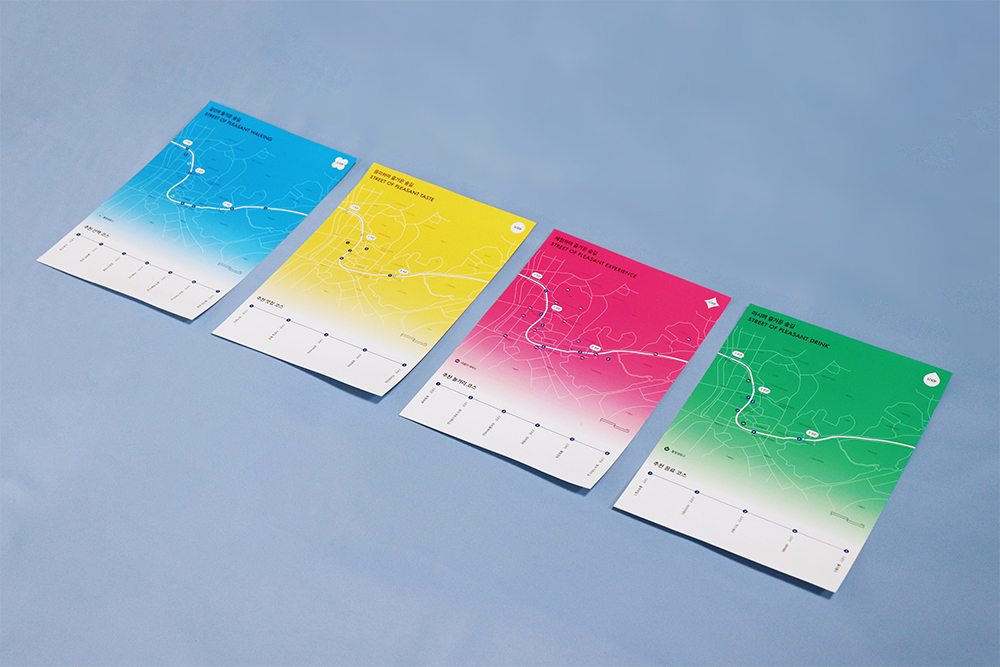
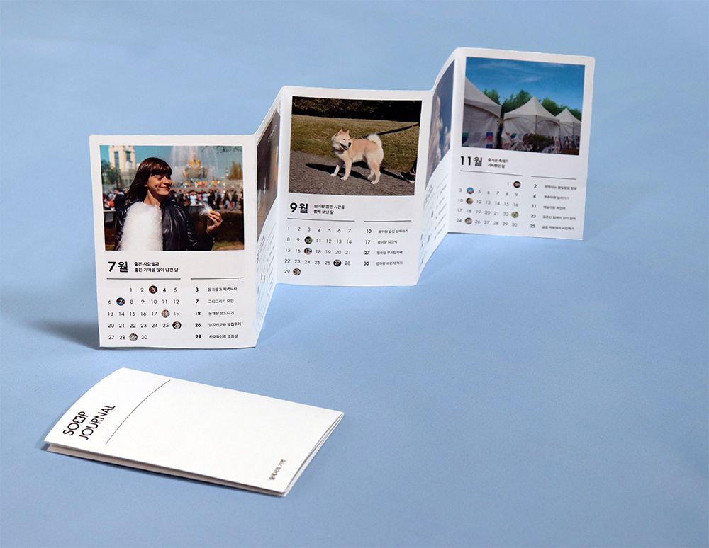
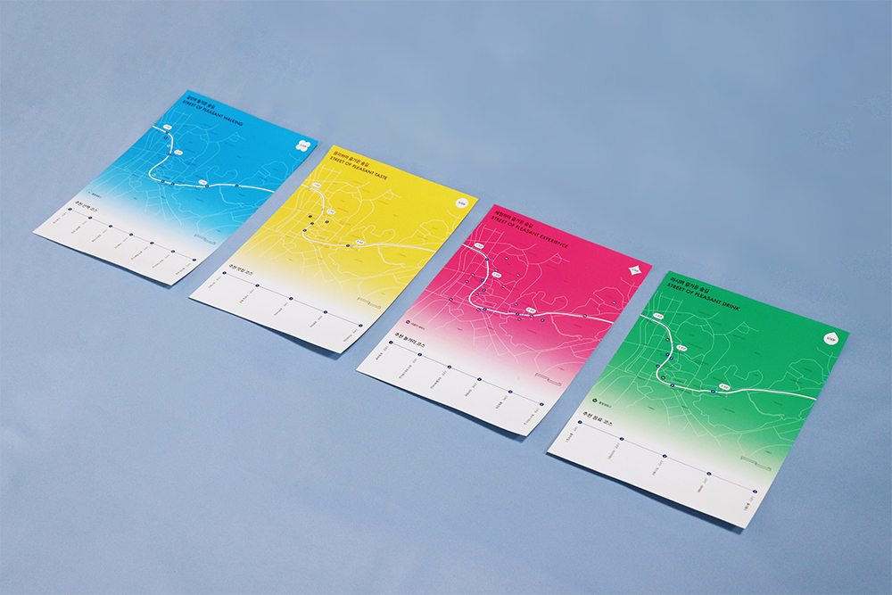
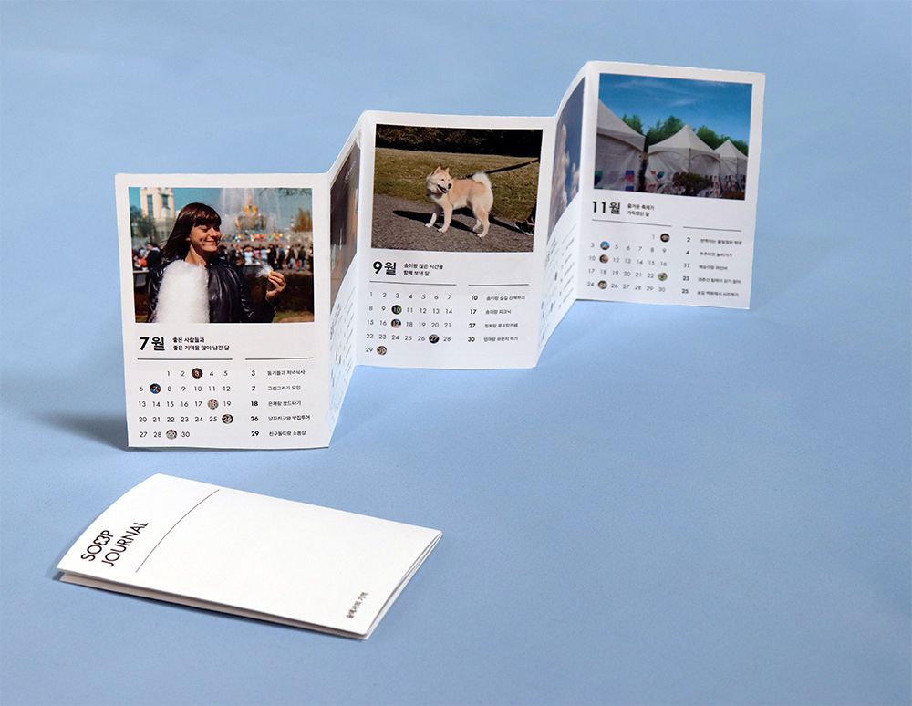

SOOP
: 우리들의
즐거운 거리
SOOP은 STREET OF OUR PLEASURE의 약자로 '우리들의 즐거운 거리'라는 의미를 담고 있습니다. 그 이름에 맞게 SOOP은 경춘선숲길에서의 즐거운 여가를 위한 서비스입니다. 온·오프라인 플랫폼을 이용해 경춘선숲길의 다양한 공간, 행사, 시설에 대해 풍성한 정보를 제공합니다. 앱 서비스에서 테스트를 통해 취향에 맞는 장소를 제안받고 함께 가고 싶은 사람과 공유하며 우리만의 코스를 만들어갑니다. 숲길의 장소는 유저들의 숏 클립으로 둘러보며 번거로움은 줄이고 공간은 더 다양한 관점으로 바라볼 수 있습니다. 오프라인 터치포인트인 추천코스와 장소카드, 코스플래너로는 직접 지도를 보고 손으로 그리며 코스를 짜볼 수 있습니다. SOOP과 함께 나만의 코스를 만들고 경춘선숲길에서 다채로운 경험을 만들어 보세요.
조은진 choeunzinf@gmail.com Instagram@chokbycho

 



 

 


